Chapter 13 Point Pattern Analysis III
NOTE: The source files for this book are available with companion package {isdas}. The source files are in Rmarkdown format and packed as templates. These files allow you execute code within the notebook, so that you can work interactively with the notes.
In the last practice/session your learning objectives included:
- The intuition behind the quadrat-based test of independence.
- The concept of kernel density.
- The limitations of density-based analysis
- More ways to work with
pppobjects.
If you wish to work interactively with this chapter you will need the following:
An R markdown notebook version of this document (the source file).
A package called
isdas.
13.1 Learning Objectives
In this practice, you will learn:
- About clustered and dispersed (or regular) patterns.
- The concept of nearest neighbors.
- About distance-based methods for point pattern analysis.
- About the G-function for the analysis of event-to-event nearest neighbor distances.
13.2 Suggested Readings
- Bailey TC and Gatrell AC (1995) Interactive Spatial Data Analysis, Chapter 3. Longman: Essex.
- Baddeley A, Rubak E, Turner R (2016) Spatial Point Pattern: Methodology and Applications with R, Chapter 8. CRC: Boca Raton.
- Bivand RS, Pebesma E, Gomez-Rubio V (2008) Applied Spatial Data Analysis with R, Chapter 7. Springer: New York.
- Brunsdon C and Comber L (2015) An Introduction to R for Spatial Analysis and Mapping, Chapter 6, 6.1 - 6.6. Sage: Los Angeles.
- O’Sullivan D and Unwin D (2010) Geographic Information Analysis, 2nd Edition, Chapter 5. John Wiley & Sons: New Jersey.
13.3 Preliminaries
As usual, it is good practice to begin with a clean session to make sure that you do not have extraneous items there when you begin your work. The best practice is to restart the R session, which can be accomplished for example with command/ctrl + shift + F10. An alternative to only purge user-created objects from memory is to use the R command rm (for “remove”), followed by a list of items to be removed. To clear the workspace from all objects, do the following:
Note that ls() lists all objects currently on the workspace.
Load the libraries you will use in this activity:
library(isdas) # Companion Package for Book An Introduction to Spatial Data Analysis and Statistics
library(spatstat) # Spatial Point Pattern Analysis, Model-Fitting, Simulation, Tests
library(tidyverse) # Easily Install and Load the 'Tidyverse'Load the dataset that you will use for this practice:
Examine the contents of the data frame you just loaded:
## x y marks
## Min. :0.0456 Min. :0.03409 Pattern 1:36
## 1st Qu.:0.2251 1st Qu.:0.22963 Pattern 2:36
## Median :0.4282 Median :0.43363
## Mean :0.4916 Mean :0.47952
## 3rd Qu.:0.7812 3rd Qu.:0.77562
## Max. :0.9564 Max. :0.94492As you can see, this data frame includes a set of coordinates for two point patterns, labeled “Pattern 1” and “Pattern 2”, each of which consists of \(n=36\) events. The range of the coordinates (between 0 and 1) suggests a window as follows:
# Remember, `owin()` is used to create a window to frame
# a point pattern in the package `spatstat`
W <- owin(c(0,1),
c(0,1))This creates an owin object that defines a region in the unit square.
Given window object W, it is possible to transform the dataframe into a ppp object:
# Remember, `as.ppp()` will take a foreign object (foreign
# to `spatstat`) and convert it into a `ppp` object
pp0.ppp <- as.ppp(pp0_df,
W = W)If you need a refresher on how to create ppp objects see Chapter 9
13.4 Motivation
Quadrats and kernel density are examples of density-based analysis. These techniques are useful to help you understand variations in the distribution of events at a relatively large scale, but as previously discussed, may sometimes be less informative by not taking into account small scale variations in the locations of the events.
For this reason, the following two patterns, despite being very different, give identical number of counts per quadrat:
# The `split()` function is used to divide data in the vector
# into groups using a categorical variable; in this case, the
# `ppp` object includes only the coordinates and a variable that
# identifies the coordinates as belonging to "Pattern 1" or
# "Pattern 2". For this reason, the split is accomplished according
# to this variable
plot(split(pp0.ppp))
# Arguments `nx` and `ny` indicate the number of quadrats on the
# x and y directions respectively
plot(quadratcount(split(pp0.ppp),
nx = 3,
ny = 3))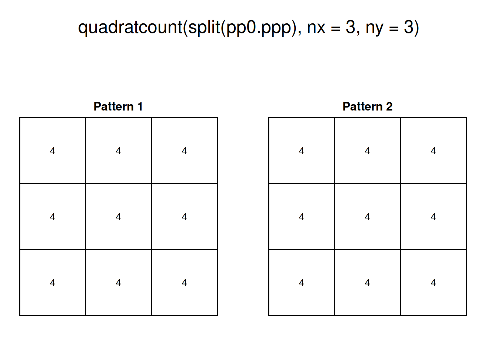
The two patterns above have similar density, However, “Pattern 1” displays clustering, a situation characterized by events generally being in close proximity to others. “Pattern 2”, on the other hand, displays dispersion or regularity, a situation where points tend to be located at similar distances from each other.
With some fiddling of the parameters, quadrats can be coaxed to tease out the variations in density, for instance:
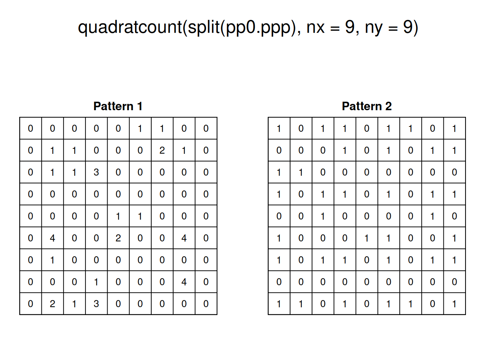
As a visualization technique, this gives a better sense of the variations in density. However, as noted previously, the quality of the test of independence deteriorates when there are many quadrats with small counts.
As an alternative, kernel density can be used to visualize the smoothed estimate of the density:
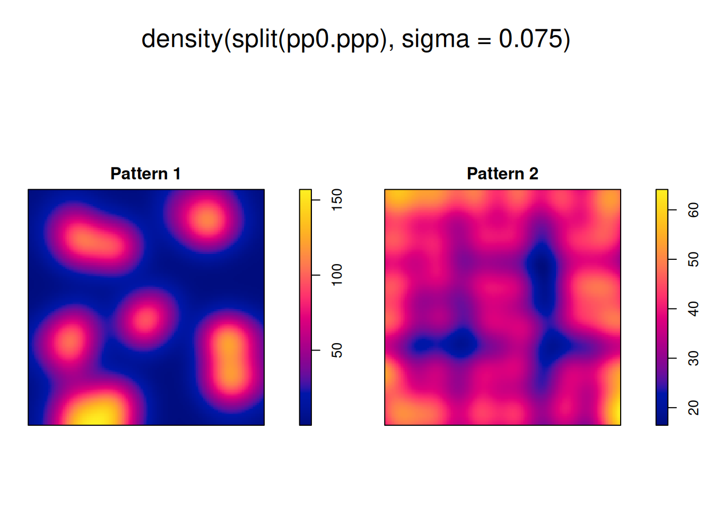
However, even when we can visualize the variations in density, we cannot, from the kernel estimate alone, tell if high/low values exceed those of a null landscape - in other words, we lack at the moment a way to test the hypothesis that the density is higher than what would be expected from a null landscape.
In this practice you will learn about a family of techniques that instead of measuring the density, explore patterns by means of distance distributions.
13.5 Nearest Neighbors
Let us begin by introducing the concept of a nearest neighbor.
The nearest neighbor of a location is the event that is closest to said location given some metric. This metric is usually Euclidean distance on the plane, that is, distance as measured using a straight line between the location and the event. In principle, the metric can be selected according to the characteristics of a dataset: this could be Euclidean distance, great circle distance, or network distance, for events on networks.(see Figure 13.1).

FIGURE 13.1: Examples of distance metrics
In this way, the nearest neighbor of \(i\) is the event \(j\) with the shortest distance \(d\) from location \(i\): \[ \text{Event }j\text{ is the nearest neighbor of location }i\text{ if: }d_{ij}\le d_{ik} \forall k \]
Ties are relatively rare in most realistic point patterns (even in regular patterns), and may not have a big impact on the analysis.
The package spatstat includes functions to calculate Euclidean distances. Three functions are relevant:
pairdist(): returns the pairwise distance between all pairs of events i and j.nndist(): returns a vector of distances from events to to their corresponding nearest neighbors; these distances are obtained by sorting the pairwise distances, and selecting the minimum value for each event.distmap(): returns a pixel image with the distance from each pixel to the nearest event; in effect this is a map of the distances between empty spaces and their corresponding nearest events.
With these functions we can calculate, for instance, the following distances:
# Function `nndist()` will calculate the distance of each
# event to its nearest neighbor
pp0_nn1 <- nndist(split(pp0.ppp)$"Pattern 1")The value of nndist() is a vector with \(n\) distances, where \(n\) is the number of events in the pattern. The first distance in the vector is the distance from the first event in the series to its nearest neighbor, the second is the distance from the second event in the series to its nearest neighbor, and so on.
Let us explore the distribution of these distances by means of a histogram:
# Remember, `geom_histogram()` adds a histogram to a `ggplot2` object;
# the `binwidth` argument defines the size of each bin for the histogram
ggplot(data = data.frame(dist = pp0_nn1),
aes(dist)) +
geom_histogram(binwidth = 0.03)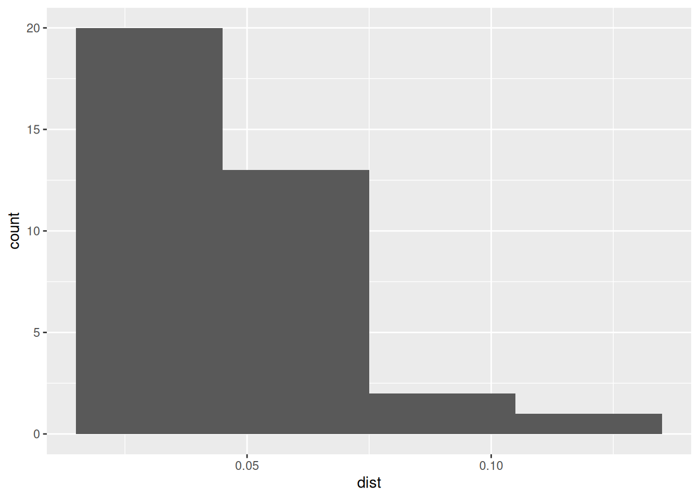
Notice how most events (20 out of 36) have a nearest neighbor at a relatively short distance (<0.05). What does this mean?
Compare to the distribution of distances in “Pattern 2” of pp0.ppp:
# Calculate the distances to nearest neighbors in the second point
# pattern, i.e., "Pattern 2"
pp0_nn2 <- nndist(split(pp0.ppp)$"Pattern 2")
# Create a histogram to explore the distribution of values of
# distances to nearest neighbors
ggplot(data = data.frame(dist = pp0_nn2),
aes(dist)) +
geom_histogram(binwidth = 0.03)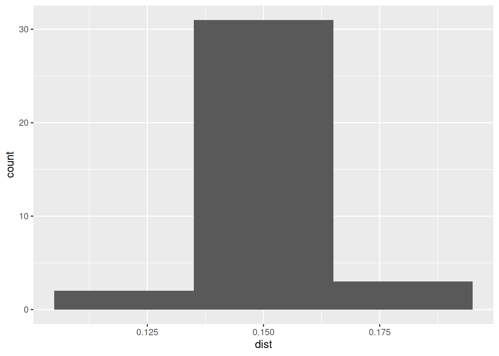
In this case, most events (more than 30 out of 36) have a nearest neighbor at a distance of approximately 0.15. What does this mean?
The two histograms above are interesting in that they reveal, for “Point Pattern 1” that most events are only a short distance away from another event (indicative of clustering), whereas for “Point Pattern 2” the suggestion is that almost all events have a nearest neighbor at a distance that is constant (indicative of regularity). However, the histograms do not convey more spatial information. Another useful tool to explore the distribution of distances to nearest neighbors is a Stienen diagram. A Stienen diagram is essentially a proportional symbol plot of the events. The sizes of symbols are proportional to the distance to their nearest neighbor. For example, for “Pattern 1” in pp0.ppp (Notice the use of %mark% to add an attribute to the ppp object; the attribute is the distance to the nearest neighbor):
# The function %mark% is used to add a variable (a "mark") to a `ppp` object. In this example, the variable we are adding to "Pattern 1" is the distance from the event to its nearest neighbor, as calculated above
split(pp0.ppp)$"Pattern 1" %mark% (pp0_nn1) %>%
plot(markscale = 1, main = "Stienen diagram")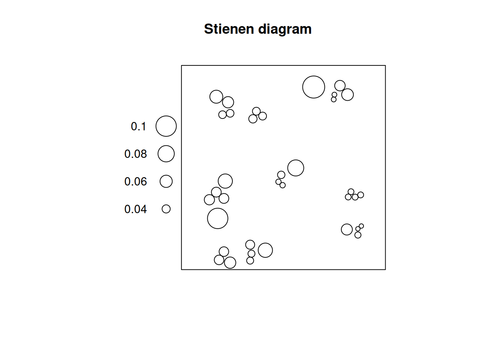
In this diagram, the largest circle is not very large: even events that are relatively isolated are not a long distance away from their nearest neighbor. This fits the definition of clustering as a situation where events tend to be relatively close to each other.
Compare to the Stienen diagram of “Pattern 2”:
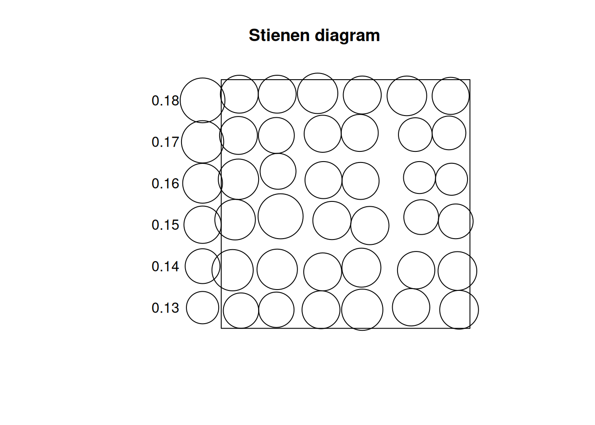
Notice how all circles are very similar in size: this fits the definition of dispersion, where events are more or less equally distant from their nearest neighbors.
What would these diagrams look for a null landscape? We can use the function runifpoint from the spatstat package to generate a null landscape:
# `runifpoint()` is a function to generate random coordinates based on the uniform random distribution function. The argument tells the function to create n = 36 random coordinates for our null landscape; this null landscape is contained in the window `W`, same as our previous point patterns
rand_ppp <- runifpoint(n = 36, win = W)If we plot the Stienen diagram for this point pattern:
# Calculate the distances to nearest neighbors for the null landscape
rand_nn <- nndist(rand_ppp)
# Add the distances as calculated above to the point pattern using %mark% and plot the Stienen diagram
rand_ppp %mark% (rand_nn) %>%
plot(markscale = 1, main = "Stienen diagram")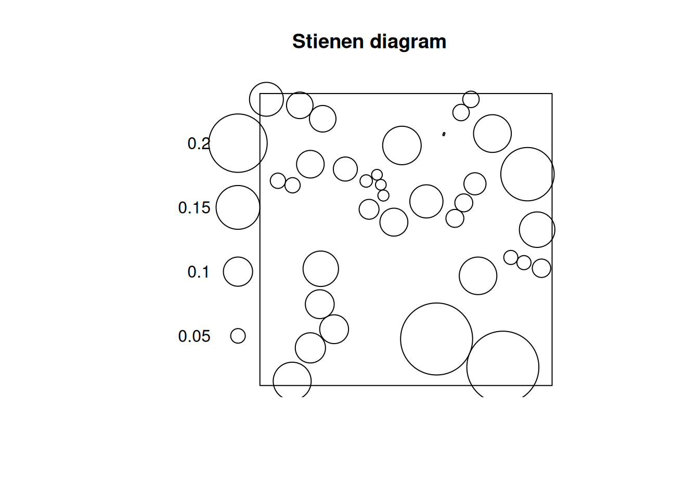
In a null landscape, the distribution of the size of the symbols would tend to be random!
The concept of nearest neighbors is useful to define a family of techniques that are based on the distribution of distances to nearest neighbors. Three such techniques are introduced here.
13.6 \(G\)-function
As you have seen above, the distribution of distances to nearest neighbors presents distinctive characteristics for different types of patterns.
What is needed is a convenient way to summarize the distribution of distances to nearest neighbors. A way to do so is by means of a plot of the cumulative distribution function. A cumulative distribution is simply the proportion of events that have a nearest neighbor at a distance less than some value \(x\). When the value of \(x\) is very small, no events have a nearest neighbor at \(d_{ij}<x\). When \(x\) is very large all events have a nearest neighbor at \(d_{ij}<x\). The cumulative distribution thus depends on the value of \(x\).
Imagine for instance the following hypothetical distribution of distances of ten events to their nearest neighbors (the first event’s nearest neighbor is at a distance of 1, the second event’s nearest neighbor is at 2, the third’s at 0.5, and so on):
When \(x = 0\), zero events have a nearest neighbor at that distance or less. Two events have nearest neighbors at distances \(d_{ij} <= 1\). Five events have a nearest neighbor at distances \(d_{ij} <= 2\). Eight events have a nearest neighbor at dist \(d_{ij} <= 3\). And all events have a nearest neighbor at distances \(d_{ij} <= 4\).
We can plot these numbers of events as a proportion:
# Create a data frame for plotting the proportion of events with a nearest neighbor at a distance $d_ij <= x$
df <- data.frame(x = c(0, 1, 2, 3, 4), proportion = c(0, 3/10, 5/10, 8/10, 10/10))
# `geom_line()` creates lines that connect the coordinates of the data inputs
ggplot() +
geom_line(data = df, aes(x = x, y = proportion))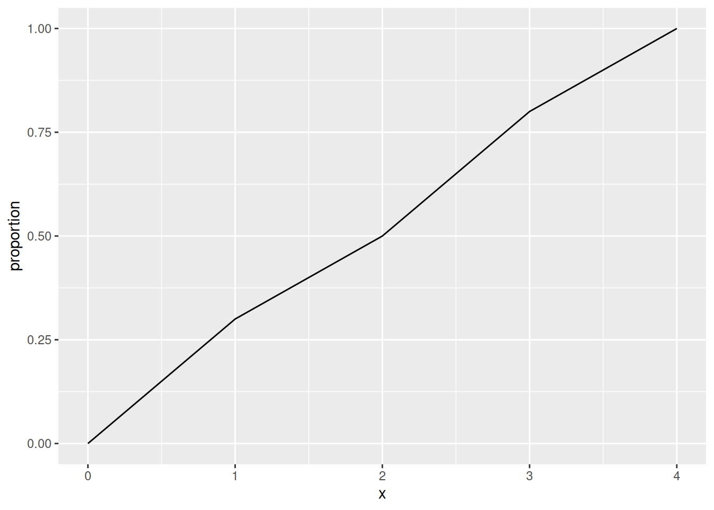
The cumulative distribution function of distances from event to nearest neighbor is called a \(G\)-function.
This function is defined as follows, with \(d_{ik}\) as the distance from the event at i to its nearest neighbor: \[ \hat{G}(x)=\frac{(d_{ik}\le x, \forall i)}{n} \]
This function (with a hat, because it is estimated from the data), can be used to explore spatial point patterns. When doing so, it is useful to know that the theoretical value of \(G\) (assuming a null landscape generated by a Poisson distribution) is as follows: \[ G_{pois}(x) = 1 - exp(-\lambda \pi x^2). \]
When the empirical \(\hat{G}(x)\) is greater than the theoretical function, this suggests that the events tend to be closer than expected, compared to the null landscape. This would be indicative of a pattern of events that form clusters. On the contrary, when the empirical function is less than the theoretical function, this would suggest that the events tend to be further away from each other than expected, compared to the null landscape. This would be indicative of a dispersed or regular pattern.
The \(G\)-function is implemented in spatstat as Gest (for \(G\) estimated):
# Use split to calculate the G-function only for "Pattern 1"
g_pattern1 <- Gest(split(pp0.ppp)$"Pattern 1", correction = "none")(For the moment ignore the argument “correction”; we will discuss corrections later on.)
The plot() function can be used to visualize the estimated G (with r = x):
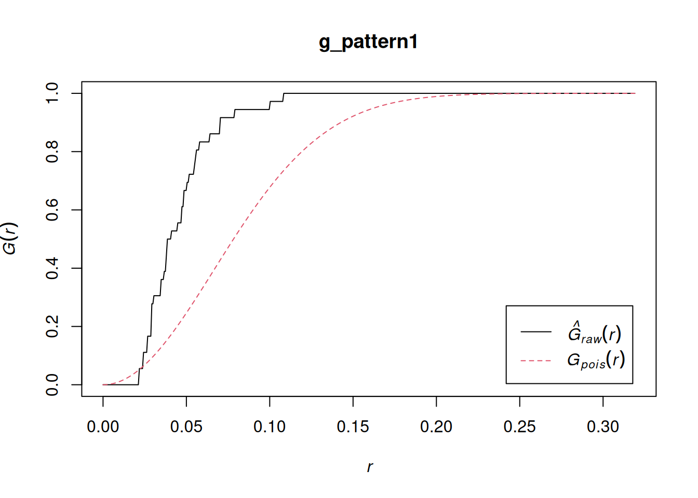
In the plot above, the empirical function is the solid black line, and the theoretical is the dashed red line.
If you examine the empirical function, you will see that about 50% of events have a nearest neighbor at a distance of less than approximately 0.04. In the null landscape (theoretical function), in contrast, only about 16% of events have a nearest neighbor at less than 0.04:
plot(g_pattern1)
lines(x = c(0.04, 0.04), y = c(-0.1, 0.5), lty = "dotted")
lines(x = c(-0.1, 0.04), y = c(0.5, 0.5), lty = "dotted")
lines(x = c(-0.1, 0.04), y = c(0.16, 0.16), lty = "dotted", col = "red")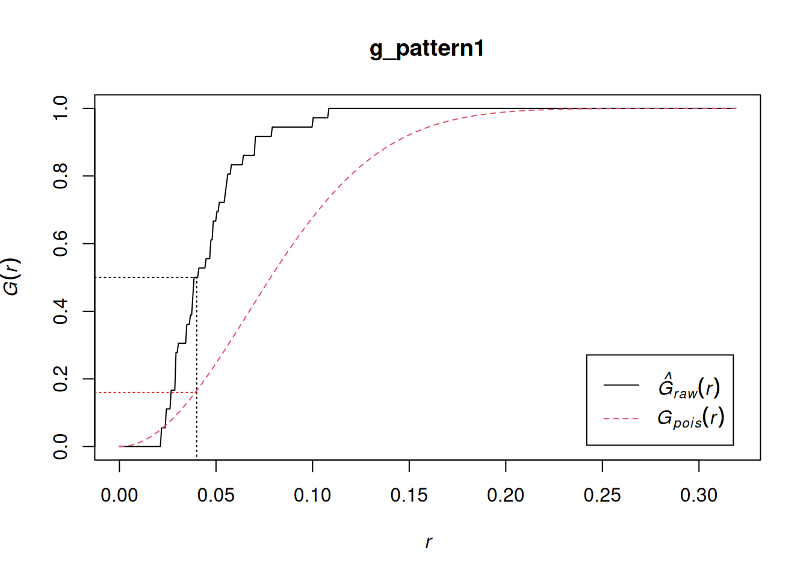
Notice that the empirical function is above the theoretical function. This suggests is that in the actual landscape events tend to be much closer to other events in comparison the null landscape, and would therefore be suggestive of clustering.
Compare to “Pattern 2”:
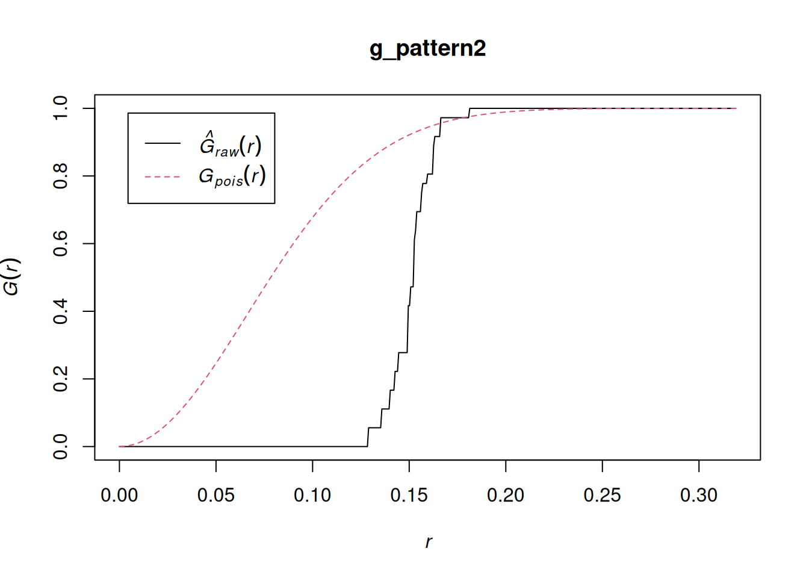
Now the empirical function is below the one for the null landscape. Notice too that all events have a nearest neighbor in a limited range of distances, between 0.14 and 0.18. This is indicative of a dispersed, or regular pattern.
And the random pattern that you created before:
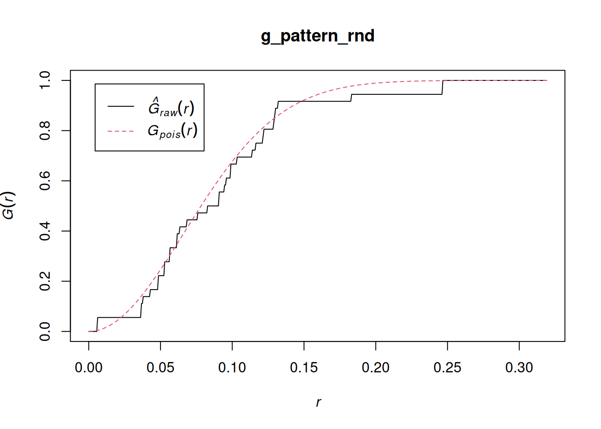
In this case, the empirical function more closely resembles the theoretical function for the null landscape. This suggests a random pattern.
By considering the distribution of distances to nearest neighbors, you can generate additional information on a point pattern to complement the density-based analysis of the preceding chapters.